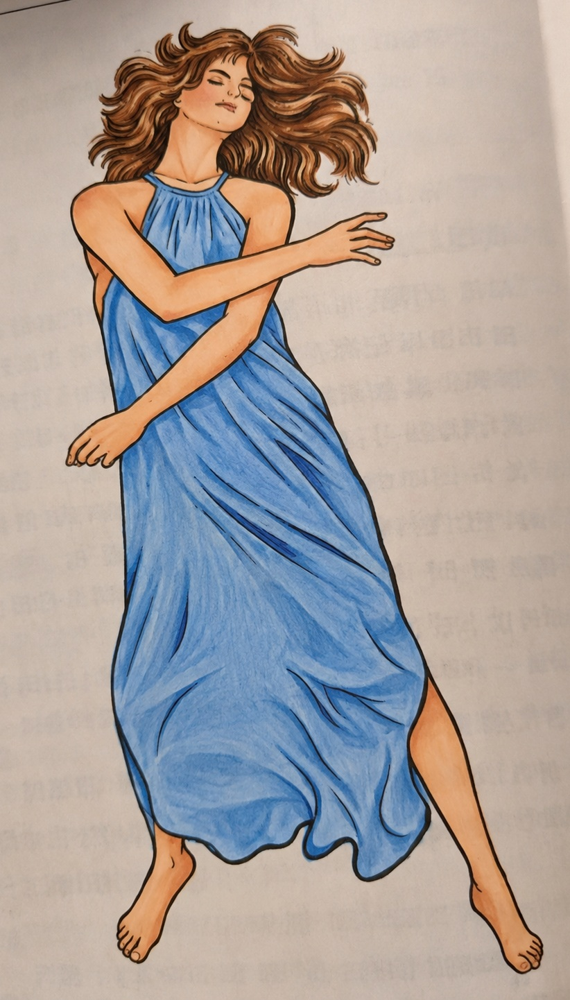
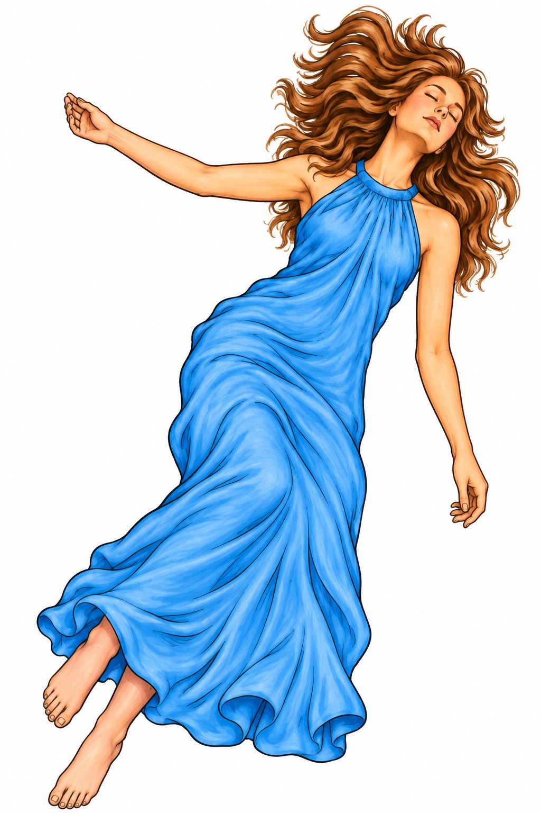

Медитация Натарадж
Позвольте танцу происходить самому, пока чувство отдельного танцора не растворится, затем войдите в неподвижность и празднование.
Для первого занятия посмотрите видео, чтобы понять движения и этапы. Для самой медитации включите аудио практики, отложите телефон и следуйте полному процессу. Если хотите практиковать офлайн, заранее скачайте аудио.
Стиль практики
Читайте по порядку: сначала поймите инструкцию этого этапа, затем посмотрите соответствующее изображение движения. Во время самой медитации можно включить аудио практики ниже.
Этап 1: 40 минут
Танцуйте с закрытыми глазами. Не контролируйте движения; позвольте телу и бессознательному взять верх.

Этап 2: 15 минут
Сразу лягте и оставайтесь в тишине и неподвижности.

Этап 3: 5 минут
Снова танцуйте — в праздновании и наслаждении.

Метод — лишь вход. Использует ли он дыхание, танец, звук, темноту, сидение или отношения, важнее всего постепенно видеть происходящее, а не только гоняться за переживанием.
Начать медитацию · Аудио практики
Используйте это аудио для самой медитации. Можно воспроизвести его здесь или скачать на телефон для практики без интернета.
Первое занятие · Видео-инструкция
Используйте видео главным образом для понимания движений, этапов и позы. Когда всё понятно, во время медитации пользуйтесь аудио практики, чтобы не приходилось смотреть на экран.